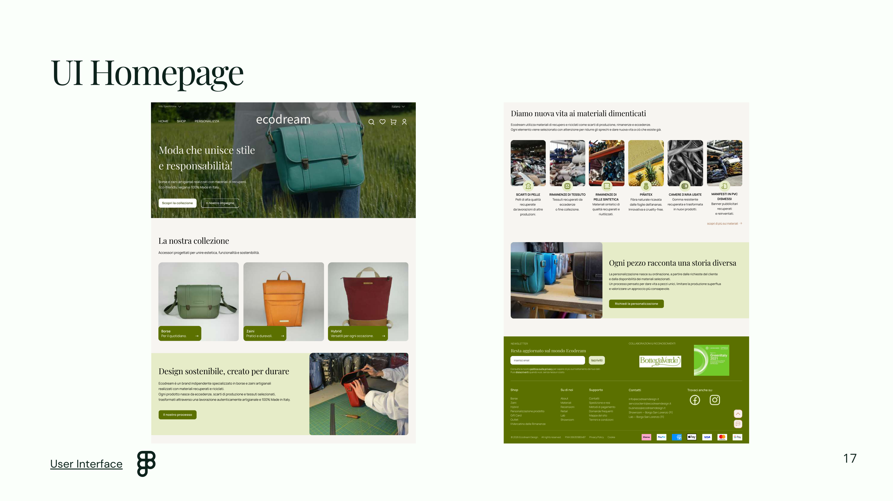
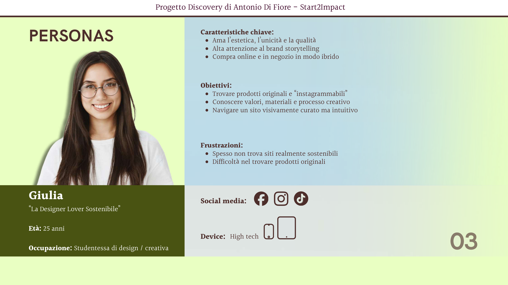
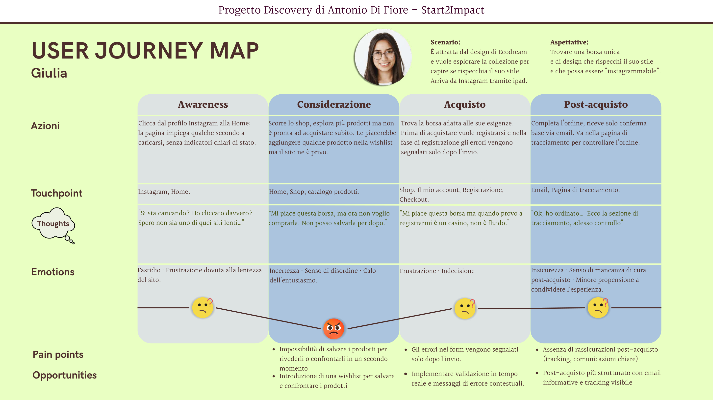
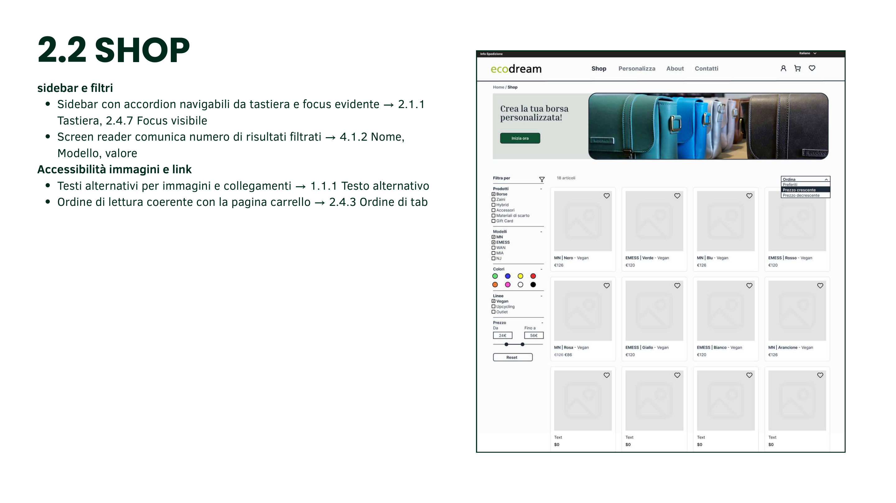
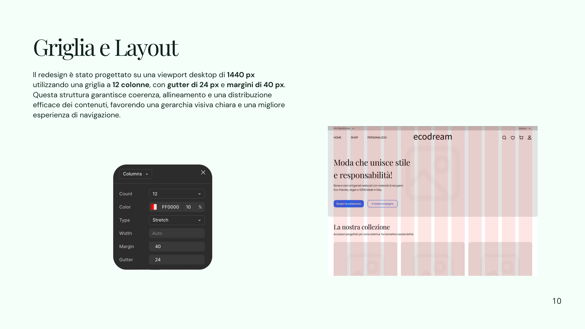
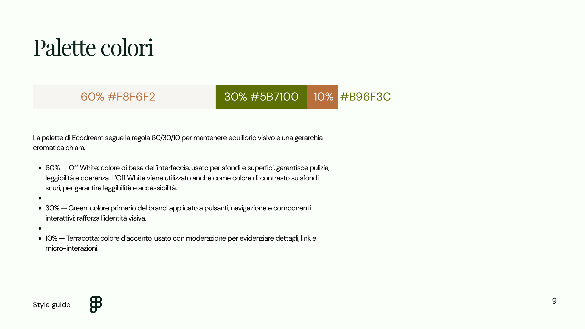
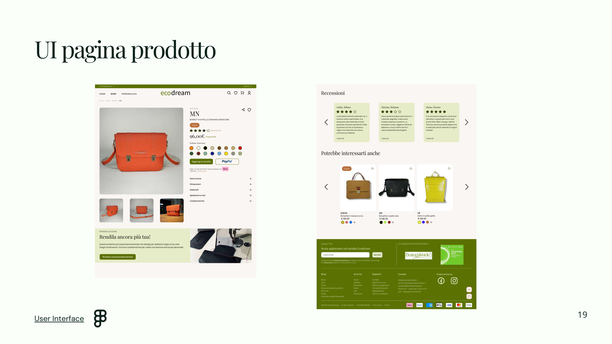
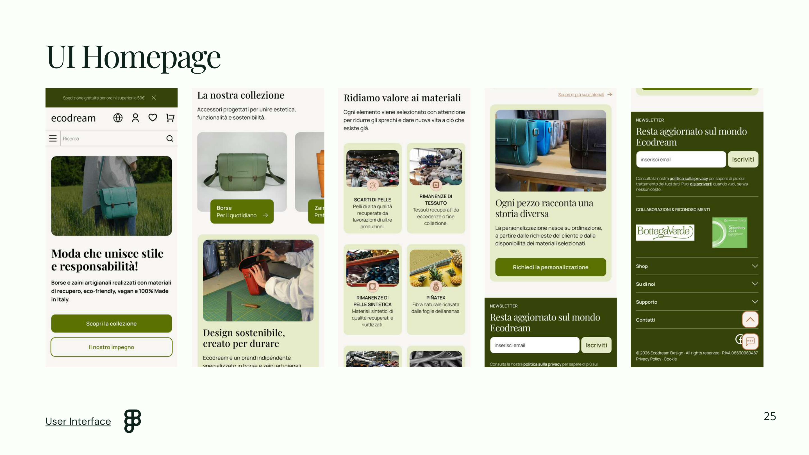
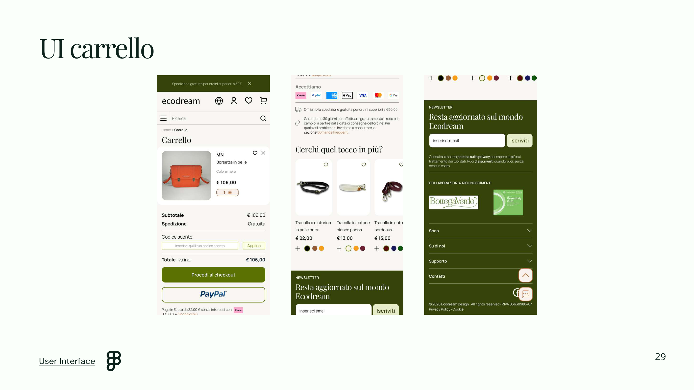

Selected work / 01 — UX/UI Design
Ecodream.
Redesigning a sustainable fashion e-commerce experience to make discovery, product information and shopping clearer, more inclusive and easier to navigate.

01 / CONTEXT
A brand built on circularity.
Ecodream is an Italian independent brand creating bags and accessories from recovered and recycled materials. The challenge was to translate its strong sustainable identity into a digital shopping experience that feels equally thoughtful.
The redesign is a student UX/UI project, not a published implementation of the brand’s website.
The design challenge
How might we reduce friction without losing the brand’s story?
Early analysis highlighted long and fragmented content, limited feedback during interactions, unclear product details and friction around shopping decisions—especially on mobile.

02 / DISCOVERY
Research before redesign.
I audited the existing desktop and mobile experience, studied competitors and gathered insights through a questionnaire with 48 participants.
These findings informed personas, an AS IS journey map, a revised sitemap and future-state journeys to prioritize the most meaningful improvements.
03 / SYNTHESIS
Turning pain points into opportunities.
The analysis revealed opportunities to simplify content hierarchy, improve the visibility of material and shipping information, support product comparison and make the path to purchase more predictable.
These insights shaped clearer navigation, improved filtering, wishlist support, more transparent product pages and guided customization.


04 / INCLUSIVE DESIGN
Accessibility as a design foundation.
Three accessibility personas explored challenges related to low vision, dyslexia and motor disabilities.
Across the homepage, category, product, customization and cart screens, I examined visual hierarchy, readable content, keyboard focus, labels, contrast and predictable interactions against WCAG criteria.
These are design recommendations and proposed solutions, not a claim of formal accessibility certification.
05 / WIREFRAMING
Structure first. Interface second.
Low-fidelity wireframes translated the research into page structures for desktop and mobile, including product browsing, product details, customization and the shopping cart.
Wireflows mapped how users would move between key tasks before visual styling was introduced.


06 / VISUAL SYSTEM
A calm, sustainable visual language.
The UI system pairs Playfair Display for editorial headings with Manrope for functional text. A 60/30/10 palette balances off-white (#F8F6F2), green (#5B7100) and terracotta (#B96F3C).
A 12-column desktop grid and 4-column mobile grid support consistent spacing, reusable components and responsive layouts.
07 / FINAL UI
From research to high-fidelity screens.
The final concept brings together more legible product information, clearer navigation and a consistent shopping journey across screen sizes.



08 / REFLECTION
What this project taught me.
Good interface design starts with understanding the people using it. This project helped me connect research insights, inclusive design, information architecture and visual consistency into one coherent UX/UI process.
The outcome is a proposed redesign and prototype; no post-launch conversion or usability performance metrics are claimed.
← Back to all projects